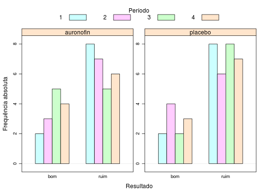

Ensaio clínico em que 20 pacientes com artrite foram aleatorizados, de modo que 10 receberam o medicamento auronofin e os outros 10 receberam placebo. São consideradas como variáveis explicativas sexo e idade, além do tipo do tratamento. Os pacientes foram consultados e avaliados em 4 ocasiões.
Um data.frame com 80 observações e 6 variáveis.
pacientperiodsexoidadetratresultPAULA (2004), Exercício 5.6.14, pág. 401.
Myers, R.H.; Montgomery, D. C. e Vining, G. G. (2002). Generalized Linear Models: With Applications in Engineering and the Sciences. John Wiley, New York.
library(lattice) data(PaulaEx5.6.15)#> Warning: data set ‘PaulaEx5.6.15’ not foundstr(PaulaEx5.6.15)#> 'data.frame': 80 obs. of 6 variables: #> $ pacient: Factor w/ 20 levels "1","10","11",..: 1 1 1 1 12 12 12 12 14 14 ... #> $ period : Factor w/ 4 levels "1","2","3","4": 1 2 3 4 1 2 3 4 1 2 ... #> $ sexo : Factor w/ 2 levels "0","1": 2 2 2 2 2 2 2 2 2 2 ... #> $ idade : int 49 49 49 49 59 59 59 59 65 65 ... #> $ trat : Factor w/ 2 levels "auronofin","placebo": 2 2 2 2 1 1 1 1 2 2 ... #> $ result : Factor w/ 2 levels "bom","ruim": 1 1 1 1 1 2 2 2 2 1 ...tb <- xtabs(~result + trat + period, data = PaulaEx5.6.15) barchart(tb, horizontal = FALSE, beside = FALSE, stack = FALSE, auto.key = list(space = "top", columns = 4, cex.title = 1, rectangles = TRUE, points = FALSE, title = "Período"), scales = list(y = list(relation = "free"), x = list(alternating = FALSE)), xlab = "Resultado", ylab = "Frequência absoluta")